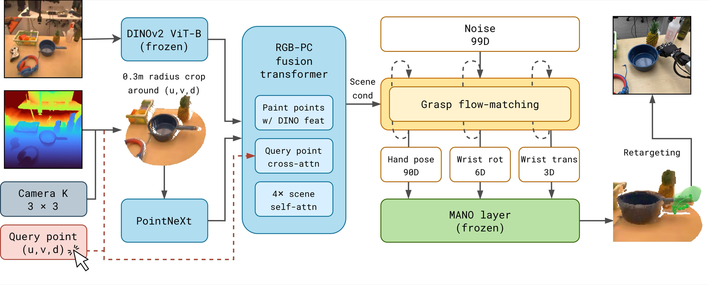
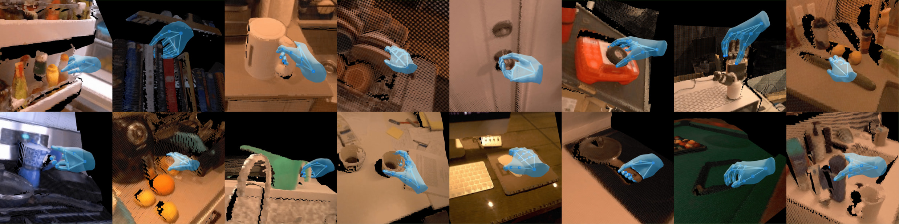
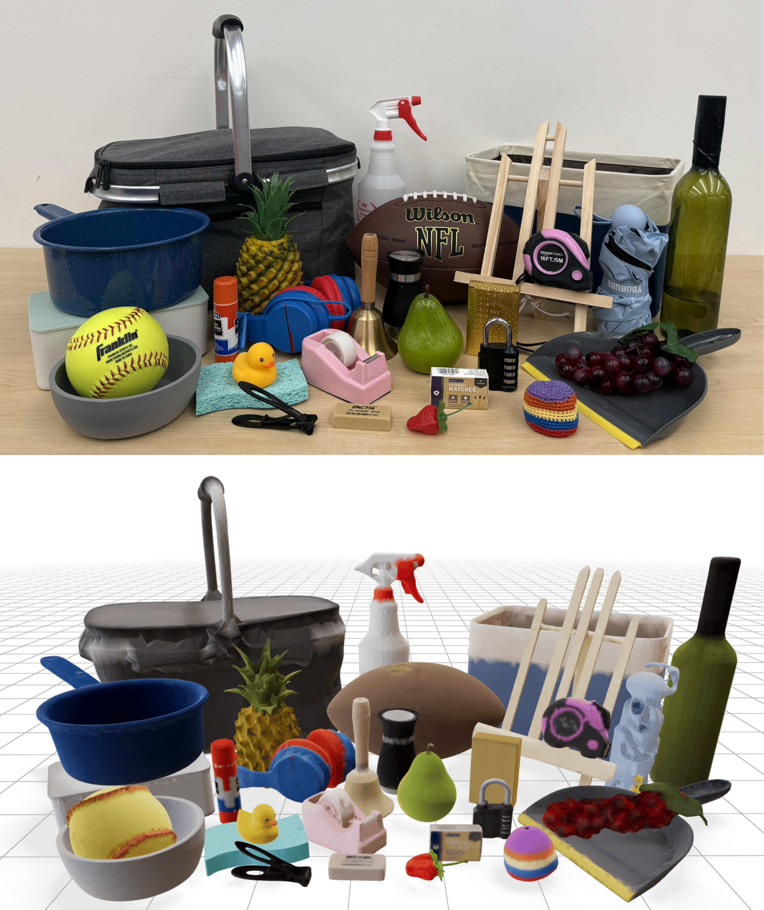
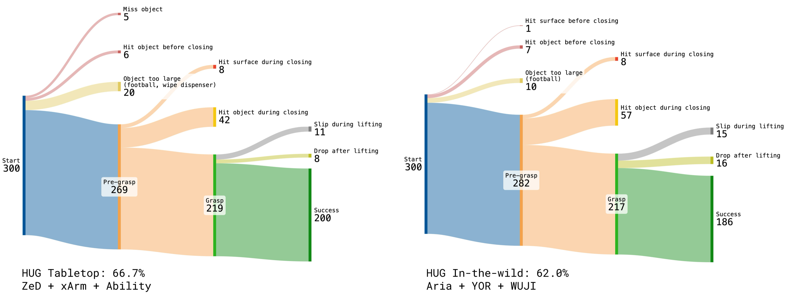

Human Universal Grasping
Abstract
Humans can grasp objects effortlessly, whereas multi-fingered robots are far from this level of generality. We argue that the most natural source of robot grasping data is from humans, who pick up thousands of objects every day. We present HUG, a flow-matching model that generates diverse human grasps for any user-specified object in a single RGB-D image captured from a stereo camera. Using smart glasses, we first collect 1M-HUGs, an egocentric dataset of human grasps spanning 1M frames (27.8 hrs) and 6,707 object instances across 41 buildings. To model the distribution of natural human grasps, our flow-matching model fuses RGB and depth observations to output a grasp parameterized by wrist translation, wrist rotation, and MANO hand pose. Predicted grasps can be retargeted to various robot hands, enabling zero-shot grasping in everyday scenes. To standardize evaluation, we build a new simulated benchmark, HUG-Bench, of 90 unseen objects from five geometric categories and various sizes, with metric-scale 3D meshes. HUG outperforms state-of-the-art grasping baselines by +23% and +34% on our challenging object set across multiple stereo cameras, robot embodiments, and household environments.
Contributions
- Human-only, any-hand framework. To our knowledge, the first grasping framework trained purely on human data and deployable across multiple robot embodiments with no per-hand training.
- 1M-HUGs dataset. One million egocentric image–grasp pairs of natural human grasps across 6.7K recordings and 41 buildings, with MANO-fit hand poses and metric depth.
- HUG model. A model that predicts MANO grasps from a single RGB-D image and a click, and retargets to multiple robot hands without per-embodiment tuning.
- HUG-Bench. 90 unseen everyday objects with metric-scale 3D meshes for paired simulation and real-world evaluation of dexterous grasping.
How It Works

The HUG pipeline. A frozen vision backbone and point encoder fuse the click-conditioned RGB-D observation; a flow-matching model then generates a MANO grasp (wrist translation, rotation, and hand pose), which is retargeted to robot hands at deployment.
The 1M-HUGs Dataset

Natural human grasps, at scale. Egocentric frames captured with smart glasses across 41 buildings, each annotated with a MANO-fit hand pose grasping an everyday object.
HUG-Bench
To standardize dexterous grasping evaluation, HUG-Bench comprises 90 everyday objects spanning five geometric categories (cylindrical, spheroidal, prismatic, appendaged, amorphous) and three size bins, all unseen during training. Many are articulated, very short, or large and unwieldy, demanding diverse grasp poses and precise spatial accuracy.
Each real object is reconstructed into a metric-scale 3D mesh from multi-view egocentric scans, enabling paired evaluation in both simulation and the real world. The 30-object test split is reproducible for roughly 250 USD from Amazon.

Real-World Failure Modes

Failure-mode breakdown. Grasp-outcome flow for the 300 HUG-Bench test trials in each real-world setting, tracing every attempt through the pre-grasp, grasp, and lift stages into success or a specific failure. Left: tabletop (66.7% success). Right: in-the-wild (62.0% success). The dominant failure mode is the absence of motion planning in our minimal open-loop setup.
BibTeX
@article{anonymous,
title={Human Universal Grasping},
author={Anonymous},
journal={Under double-blind review},
year={2026}
}